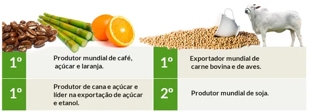
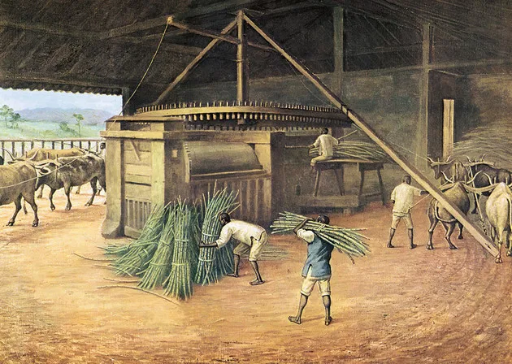
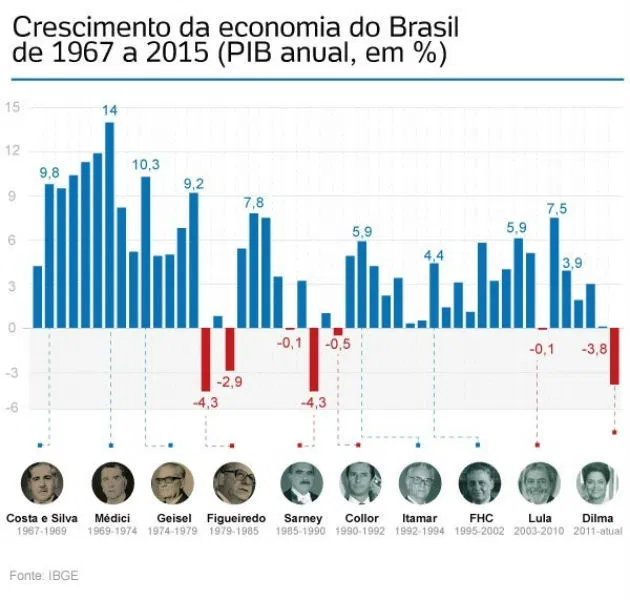

A economia brasileira é considerada, em 2018, a nona economia mundial e a primeira da América Latina, segundo dados do FMI. O PIB do Brasil é estimado em 2,14 trilhões de dólares. O país atingiu o posto de sétima economia mundial em 1995 e se manteve entre as dez primeiras economias desde então. Importante lembrar que os indicadores econômicos não refletem, necessariamente, bons indicadores sociais.
A economia brasileira atual é diversificada e abrange os três setores: primário, secundário e terciário. O País há muito abandonou a monocultura ou o direcionamento unicamente para um tipo de indústria. Hoje, a economia brasileira é baseada na produção agrícola, o que faz do Brasil um dos principais exportadores de soja, frango e suco de laranja do mundo. Ainda é líder na produção de açúcar e derivados da cana, celulose e frutas tropicais. Igualmente, possui uma importante indústria de carne, com a criação e abate de animais, ocupando o posto de terceiro produtor mundial de carne bovina. Confira os dados da EcoAgro, de 2012, sobre a agroindústria brasileira:
Em termos de indústria de transformação, o Brasil se destaca na produção de peças para abastecimento dos setores automotivos e aeronáuticos. Da mesma forma é um dos principais produtores de petróleo do mundo, dominando a exploração de petróleo em águas profundas. Mesmo assim é destaque na produção de minério de ferro.
O primeiro mercado a ser explorado no território da América por Portugal foi o pau-brasil (Caesalpinia echinata). A árvore era encontrada em abundância na costa e através dela, o Brasil recebeu este nome. Esta espécie tem porte médio, chega a atingir 10 metros de altura e possui muitos espinhos. De floração amarela, o pau-brasil tem um tronco avermelhado que após o processamento era utilizado como corante para tecidos. A história econômica do Brasil pode be estudada através de ciclos econômicos. Estes foram elaborados pelo historiador e economista Caio Prado Jr.(1907-1990) como uma tentativa de explicar os caminhos da economia brasileira.
O pau-brasil era encontrado na maior parte da costa do litoral brasileiro, numa faixa que ia do Rio Grande do Norte ao Rio de Janeiro. A extração era feita por mão de obra indígena e obtida através do escambo. Além do uso para a extração de corante, o pau-brasil era útil na produção de utensílios em madeira, na confecção de instrumentos musicais e empregado na construção. Três anos após o descobrimento, o Brasil já contava com um complexo de extração da madeira.
Após o esgotamento da oferta de pau-brasil - que ficou praticamente extinto - os portugueses passaram a explorar a cana-de-açúcar na sua colônia da América. Este ciclo durou mais de um século e teve impacto significativo na economia colonial. Os colonizadores instalaram engenhos para a produção de açúcar no litoral que era feito através de mão de obra escrava. Os engenhos estavam localizados em todo nordeste, mas principalmente em Pernambuco. Como havia dificuldades em dominar a logística da exploração da cana-de-açúcar, o suporte para a indústria açucareira foi obtido junto aos holandeses, que passaram a responsáveis pela distribuição e comercialização do açúcar ao mercado europeu.
Entre as consequências deste cultivo está o desmatamento da costa brasileira e a chegada de mais portugueses para participar dos imensos lucros gerados na colônia portuguesa. Igualmente há a importação de africanos como escravos para trabalhar nos engenhos. Como monocultura, a exploração da cana era baseada na estrutura de latifúndios - grandes propriedades de terra - e no trabalho escravo. Este era sustentado pelo tráfico negreiro, dominado pela Inglaterra e por Portugal. Os colonizadores também se dedicavam a outras atividades econômicas como buscar metais preciosos. Isto levou expedições, conhecidas como entradas e bandeiras, ao interior da colônia a fim de encontrar ouro, prata, diamantes e esmeraldas.
A busca por pedras e metais preciosos teve o ápice no século XVIII, entre 1709 e 1720, na capitania de São Paulo. Nesta época, esta região comportava o que é hoje Paraná, Minas Gerais, Goiás e o Mato Grosso. A exploração dos metais e pedras preciosas foi impulsionada pelo declínio da atividade canavieira, em franca decadência após os holandeses iniciarem o plantio de cana em suas colônias da América Central. Com a descoberta de minas e pepitas nos rios de Minas Gerais tem início o chamado ciclo do ouro. A riqueza que vinha do interior do País influenciou na transferência da capital, antes em Salvador, para o Rio de Janeiro, a fim de controlar a saída do metal precioso. A Coroa Portuguesa sobretaxou os produtos da colônia e cobrava impostos, denominados quinto, derrama e capitação eram pagos nas Casas de Fundição. O quinto correspondia a 20% de toda a produção. Já a derrama representava 1,5 mil quilos de ouro que deveriam ser pagos a cada ano sob pena de penhor compulsório dos bens dos mineradores. Por sua vez, a capitação era a taxa correspondente a cada escravo que trabalhava nas minas. A insatisfação dos colonos com a cobrança de impostos, considerada abusiva, culminou no movimento denominado Inconfidência Mineira, em 1789. A busca pelo ouro influenciou o processo de povoamento e ocupação da colônia, alargando os limites do Tratado de Tordesilhas. Este ciclo perdurou até 1785 coincidindo com o começo da Revolução Industrial na Inglaterra.
O ciclo do café foi o responsável pelo impulso à economia brasileira do início do século XIX. Esse período foi marcado pelo intenso desenvolvimento do país, com a expansão de estradas de ferro, a industrialização e a atração de imigrantes europeus.
O grão, de origem etíope, era cultivado por holandeses na Guiana Francesa e chegou ao Brasil em 1720, sendo cultivado no Pará e depois Maranhão, Vale do Paraíba (RJ) e São Paulo. As lavouras de café também se espalharam por Minas Gerais e Espírito Santo.
As exportações começaram em 1816 e o produto liderou a pauta exportadora entre 1830 e 1840.
A grande parte da produção estava no estado de São Paulo. A elevada quantidade de grãos favoreceu a modernização de modais de transporte, notadamente ferroviário e portuário.
O escoamento era feito pelos portos do Rio de Janeiro e Santos, que receberam recursos para adequação e melhorias.
Nesse momento histórico, a mão de obra escrava havia sido abolida e os fazendeiros não quiseram aproveitar os trabalhadores libertos, a maioria das vezes por preconceito.
Assim houve necessidade de arranjar mais braços para a lavoura, condição que atraiu imigrantes europeus, com destaque para os italianos.
Após quase cem anos de prosperidade, o Brasil começou a enfrentar uma crise de superprodução: havia mais café para vender do que compradores.
Do mesmo modo, ocorre o fim do ciclo cafeeiro em consequência da quebra da bolsa de Nova York, em 1929. Sem compradores, a indústria cafeeira diminuiu de importância no cenário econômico brasileiro a partir dos anos 50.
A queda da produção do café também significou um marco para o país no que tange à diversificação da base econômica.
A infraestrutura, antes utilizada para o transporte de grãos, foi o suporte para a indústria, que passa a manufaturar produtos de elaboração simplificada, como tecidos, alimentos, sabão e velas.
O governo de Getúlio Vargas (1882-1954) passa a incentivar a instalação da indústria pesada no Brasil como a siderurgia e a petroquímica. Isso provocou o êxodo rural em vários pontos do país, sobretudo no nordeste, onde a população fugia da decadência rural. As medidas em benefício da indústria foram favorecidas pela eclosão da Segunda Guerra Mundial. Ao fim do conflito, em 1945, a Europa estava devastada e o governo brasileiro investe num moderno parque industrial para se auto abastecer.
A indústria passa a ser o centro das atenções no governo de Juscelino Kubitschek (1902-1976), que implanta o Plano de Metas, batizado de 50 anos em 5. JK previa que o Brasil cresceria em 5 anos o que não havia crescido em 50. O Plano de Metas indicava os cinco setores da economia brasileira para onde os recursos deveriam ser canalizados: energia, transporte, alimentação, indústria de base e educação. Fazia parte também a construção de Brasília e, posteriormente, a transferência da capital do país.
Durante a ditadura militar, os governos abrem o país a investimentos estrangeiros que impulsionam a infraestrutura. O Brasil vive, entre 1969 e 1973, o ciclo denominado Milagre Econômico, quando o PIB cresce 12%. É nessa fase que são construídas obras de grande impacto, como a ponte Rio-Niterói, a hidrelétrica de Itaipu e a rodovia Transamazônica. No entanto, essas obras eram caras e também causam a tomada de empréstimos a juros flutuantes. Assim, se vivia uma inflação de 18% ao ano e o crescente envidamento do País, a despeito da geração de milhares de empregos. O Milagre Econômico não possibilitou o desenvolvimento pleno, pois o modelo econômico privilegiou o grande capital e a concentração de renda aumentou. Por parte do setor primário, a produção de soja já era a partir da década de 70 a principal commodity de exportação.
O período é marcado pela insuficiência de recursos da União para o pagamento da dívida externa. Ao mesmo tempo, o País precisava adaptar-se aos novos paradigmas da economia mundial, que previa inovações tecnológicas e pelo crescimento da influência do setor financeiro. Nesse período, 8% do PIB nacional é direcionado ao pagamento da dívida externa, a renda per capita fica estagnada e a inflação aumenta vertiginosamente. Há, desde então, uma sucessão de planos econômicos para tentar conter a inflação e retomar o crescimento, sem sucesso. Por isso, os economistas chamaram os anos 80 de "década perdida". Observe a evolução do PIB do Brasil de 1965 a 2015:
Este conteúdo foi útil?